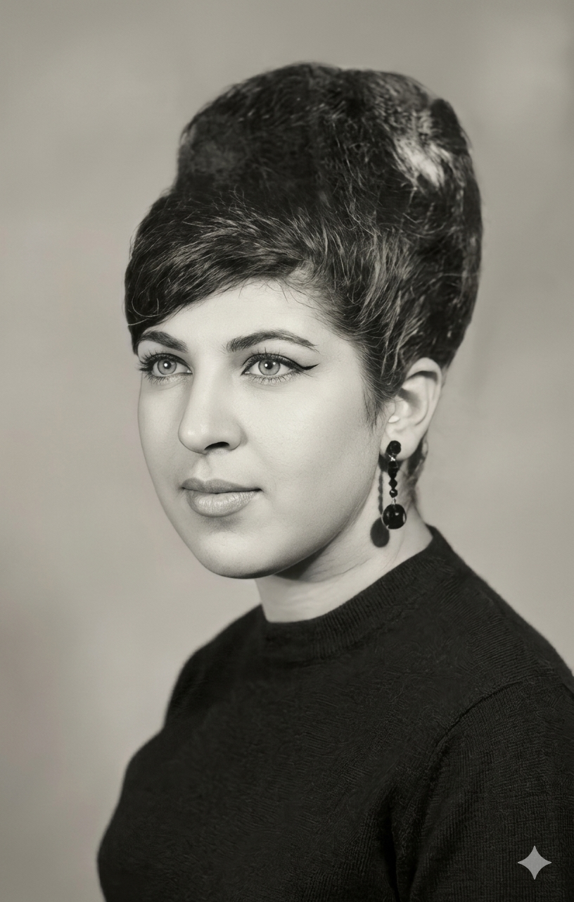

Participación 2: Conociendo Photoshop
Fue la primera vez que abrí Photoshop en la clase. Estuve explorando las herramientas y las capas para entenderle a la edición de imágenes.

Descargar PSDPráctica 6: Restauración de fotografía
Agarré una foto viejita que estaba rota y manchada. Con el pincel corrector le fui borrando todos los rayones hasta dejarla limpia y como nueva.
Práctica 7: Aplicar color a Fotos Antiguas
Le pusimos color a una foto antigua en blanco y negro usando capas de ajuste. Me tardé un buen pintando la piel y la ropa.
Práctica 8: Retoque de Piel (Eliminación de imperfecciones)
Usé las herramientas de parche y corrector para quitarle granos y manchas a una cara. Intenté que la piel no quedara toda borrosa o falsa.
Práctica 9: Estilización de Figura (Licuar)
Usamos el filtro de licuar para ajustar los contornos del cuerpo en una foto. Tuve que andar con cuidado de no deformar todo el fondo.

Participación 3: El Arte del Retoque Fotográfico y la Ética Visual
Investigué del retoque digital y grabé un video corto opinando sobre la ética y si está bien andar cambiando los cuerpos de la gente en publicidad.
{kind=link}
Participación 4: El Flujo de Trabajo Profesional (Destructivo vs. No Destructivo)
Me grabé haciendo un tutorial rápido para explicar por qué conviene usar máscaras y objetos inteligentes en vez de andar borrando los pixeles a lo loco.
Participación 5: Fotocomposición y Modos de Fusión
Realicé una fotocomposición mezclando varias capas utilizando modos de fusión en Photoshop para integrar de forma armónica diferentes elementos.
Práctica 10: Collage Surrealista / Pop Art "Mi Mente en Capas"
Recorté una foto mía y le encimé imágenes de mis cosas favoritas, como bandas y videojuegos, para hacer un collage estilo Pop Art bien loco.
Práctica 11: Fotomontaje "Tú en un Mundo Extraño" (Doble Exposición o Integración Surrealista)
Creé un fotomontaje integrando elementos y mi silueta en un entorno de fantasía, cuidando las sombras y el color para una fusión realista.